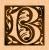

|

yatis, the serpent-bearded, the god of forgetfulness,son of Yig, came with the Great Old Ones from the stars, called by obeisances made to his image which was brought by the Deep Ones to Earth. He may be called by the touching of his image by a living being. His gaze brings darkness on the mind; and it is told that those who look upon his eyes will be forced to walk into his clutches. He feasts upon those who stray to him, and from those upon whom he feasts he draws a part of their vitality, and so grows vaster. For there is this about those images of the Great Old Ones brought down from the stars when all the Earth was young, that a psychic link connects such as Byatis or Han to their images, and they that worship the Great Old Ones and who serve them on this plane may communicate with their Masters through such ideals; but a fate darkling and terrible beyond belief is reserved for they who unwittingly possess such idols from Beyond, for them the Old Ones drain vitality through this psychic link, and their dreams are made hideous with nightmare glimpses of the Ultimate Pit. |
 e Serpent Beared Byatis
e Serpent Beared Byatis
 Coming-Down of the Old
Ones Coming-Down of the Old
Ones |